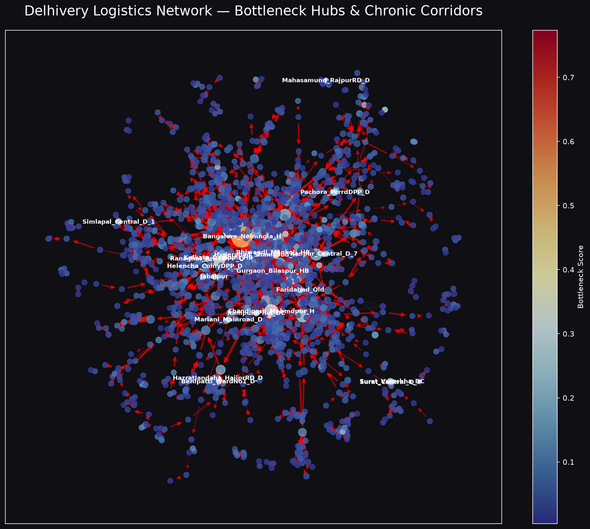
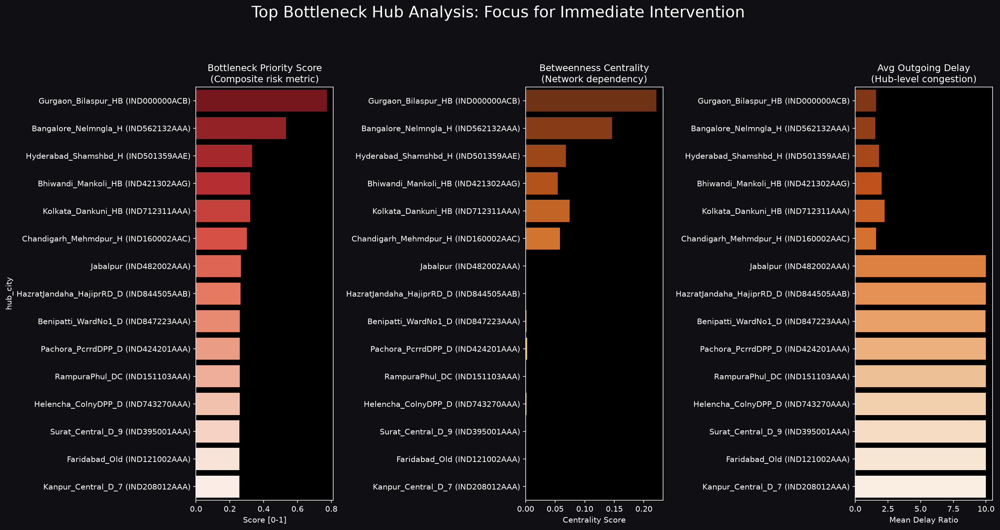
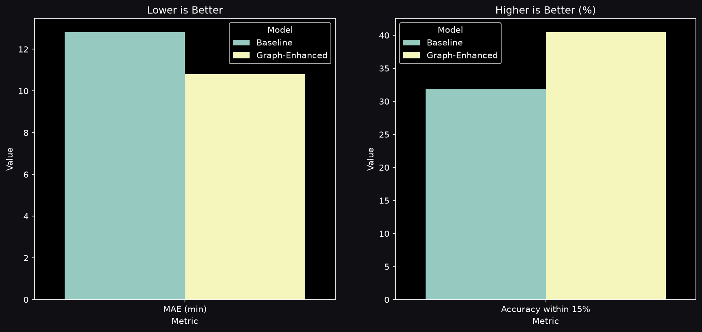
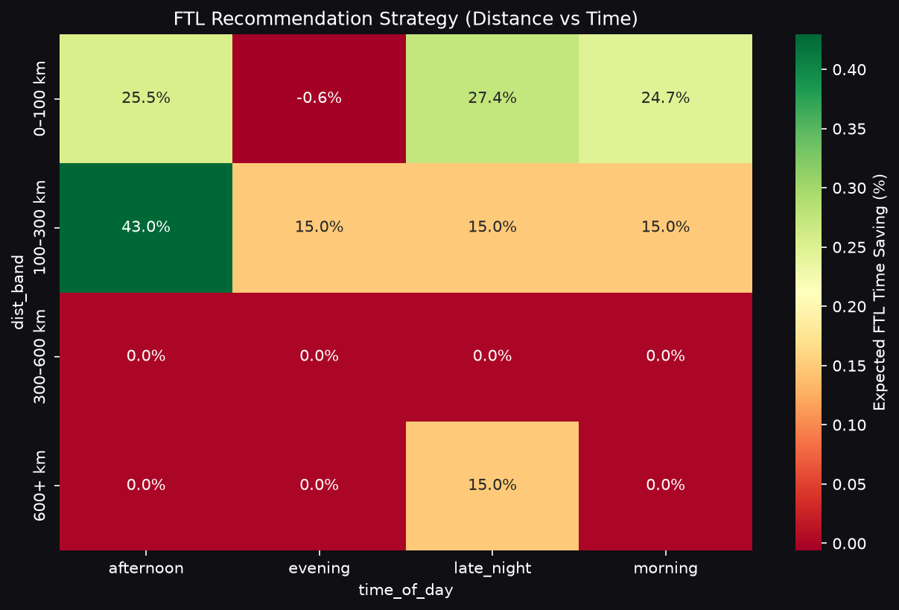

Prepared by Shikhar Verma
Delhivery uses OSRM (shortest path) to estimate delivery times. However, real-world logistics is messy. Facility dwell times, node congestion, and route profiles cause actual delivery times to deviate significantly.
The Result: A 95%+ SLA Breach Rate on specific chronic routes, leading to unhappy customers and broken capacity planning.
We modeled the logistics network not as isolated trips, but as a living Directed Graph.

Node Size = Betweenness Centrality | Red Edges = Chronic Delay Corridors
Based on our normalized Bottleneck Priority Score, these 5 facilities cause the most structural damage to the network:

We trained two XGBoost regressors to predict true delivery times. The first used standard baseline features (OSRM). The second injected Graph Embeddings and Hub Centrality Metrics.

We built an ML classifier to dictate route types based on corridor risk profiles. Long-haul corridors through high-betweenness hubs show ~15-20% variance reduction when shifted to FTL.

Explore the Live Interactive Dashboard: